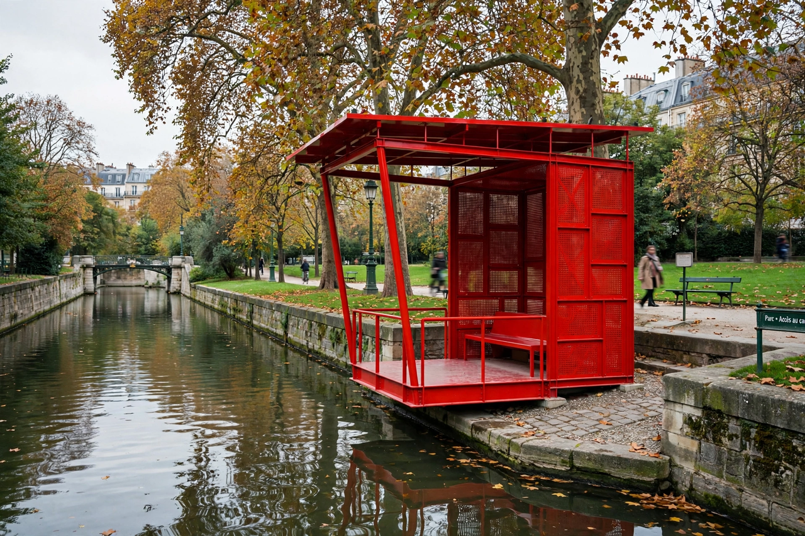

From Wikipedia, the free encyclopedia
| Parc de la Villette | |
 | |
| Location | 19th arrondissement, Paris, France |
|---|---|
| Area | 55.5 hectares (137 acres) |
| Designer | Bernard Tschumi |
| Created | 1987–1991 (competition 1982–83) |
The Parc de la Villette is the third-largest park in Paris, occupying 55.5 hectares in the 19th arrondissement on the site of the city's former abattoirs and national wholesale meat market. Designed by Franco-Swiss architect Bernard Tschumi, who won the international competition in 1983, it is the most famous built work of deconstructivist landscape architecture.
Tschumi rejected the idea of the park as picturesque nature, instead superimposing three autonomous systems. A point grid of folies — some thirty-five red enamelled-steel structures, variations on a deconstructed 10.8-metre cube — provides flexible pavilions for cafés, workshops, first aid and other shifting uses. Linear elements include two covered galleries and winding cinematic promenades, while large open surfaces host lawns, themed gardens and the vast prairie du triangle. Tschumi described the park as the largest discontinuous building in the world, a design "against" fixed meaning, composed from the logics of film montage and literary deconstruction.
The park is bisected by the Canal de l'Ourcq. It contains the Cité des Sciences et de l'Industrie, Europe's largest science museum, with the Géode IMAX sphere; the Cité de la Musique and the Philharmonie de Paris; the Zénith concert hall; the decommissioned submarine Argonaute; and a series of ten themed gardens, including the Jardin du Dragon with its giant steel dragon slide and the mirror and bamboo gardens. A summer open-air cinema festival is held on its lawns each year.
La Villette influenced a generation of landscape design — including the "landscape urbanism" movement — and remains a standard case study of postmodern and deconstructivist design theory, alongside Tschumi's theoretical projects such as The Manhattan Transcripts.